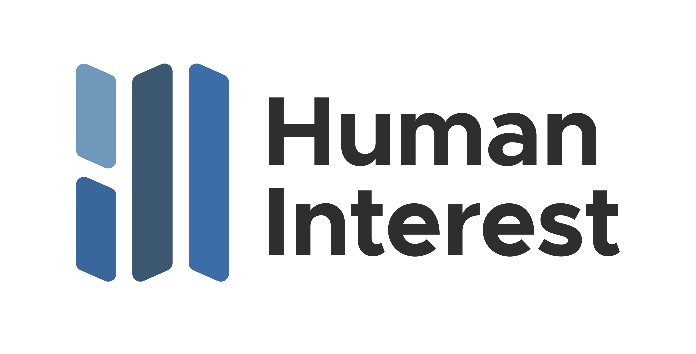
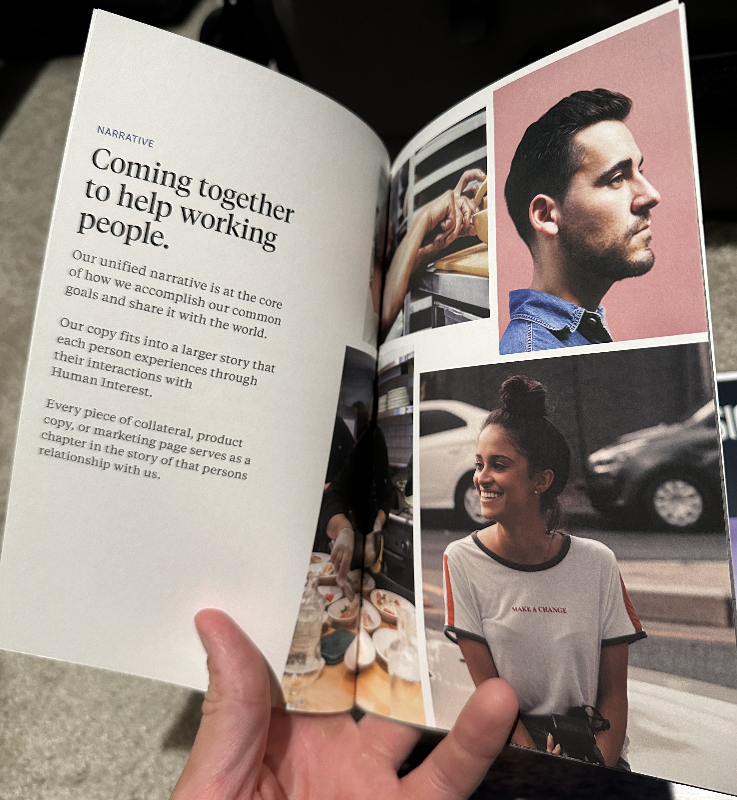
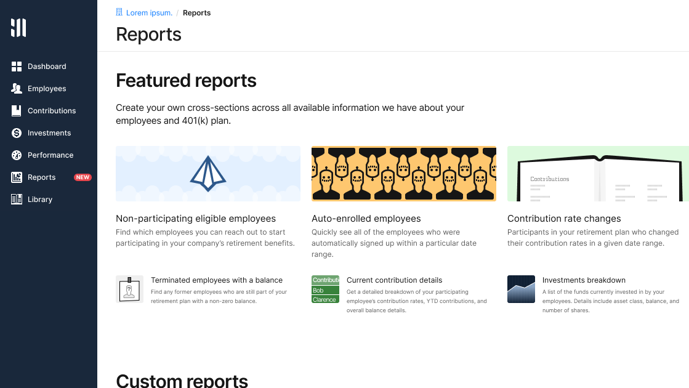
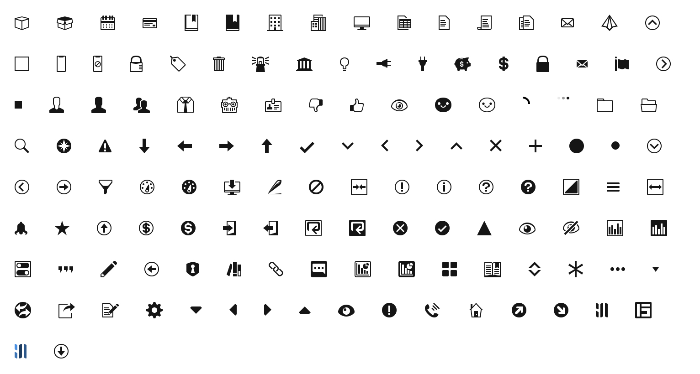
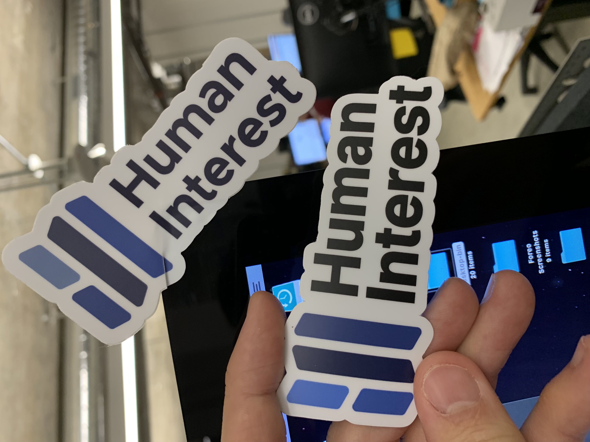
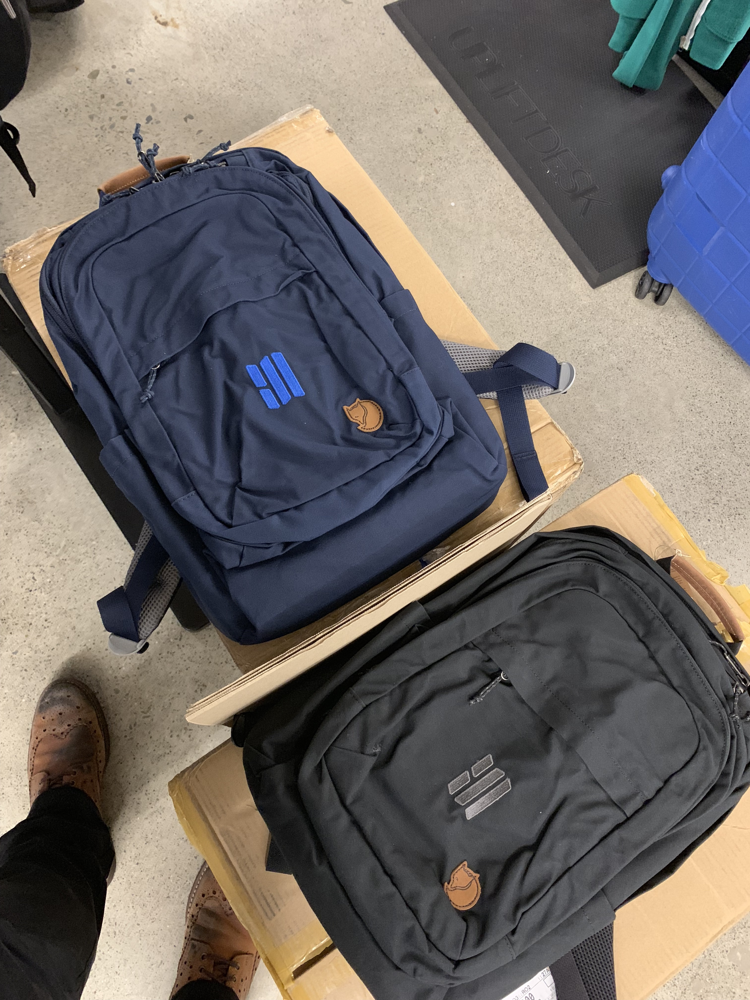
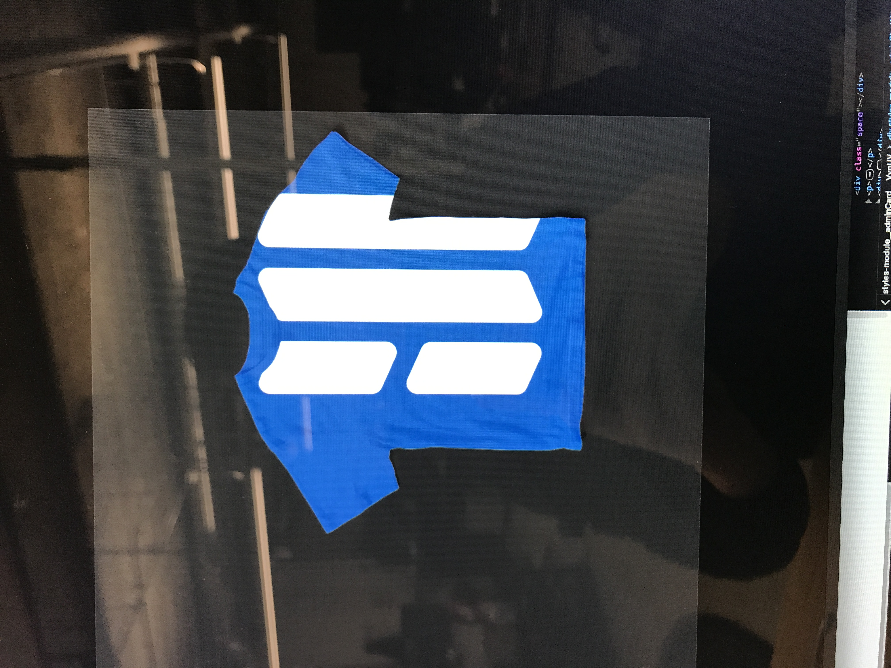
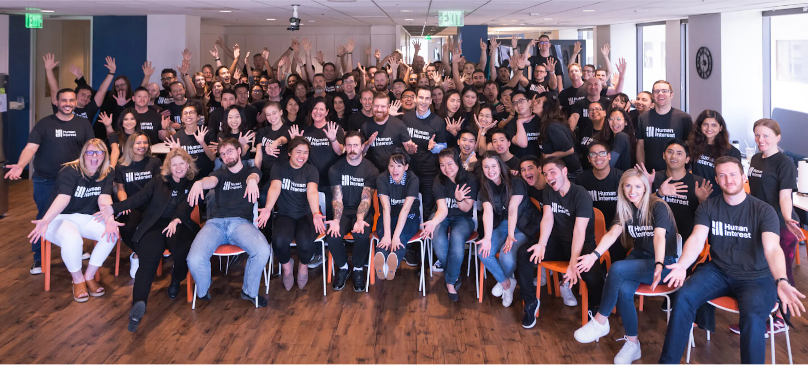
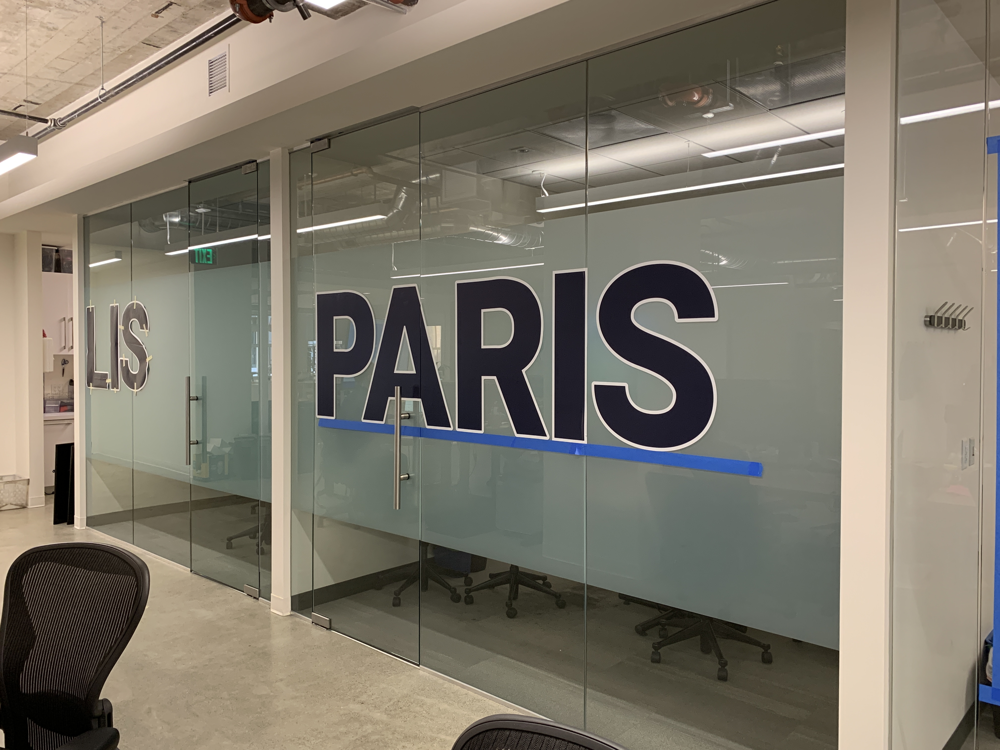
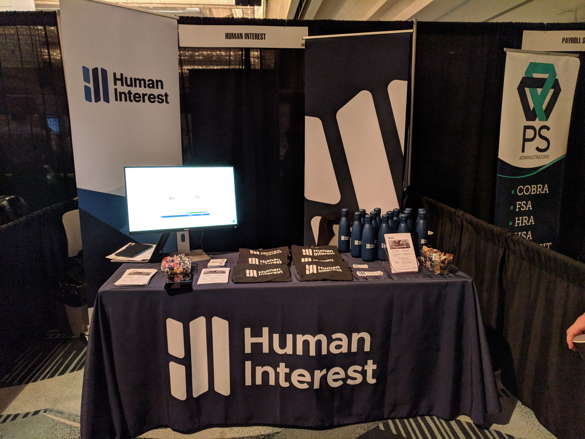

Ever wondered how much work it is to create a corporate identity, design guidelines, design component system, marketing and sales materials, and other required assets?
Answer: a fucking lot.
Yes, everything you see below (and a ton of other things I need to find images of) I did as a solo contributor within 6 months.

The final version of the Human Interest logo and text treatment. The logo represents an unfolding map, in the way Human Interest provides a roadmap to a successful financial future. Hidden in the map's negative space are the letters "H" and "I".

A Human Interest brand booklet. This treatment also determined the style and tone of advertising and marketing materials for the new brand.

Redesigned version of the main product offering, a 401(k) administration tool. Not pictured: the end-user product, and internal operations tool.

Part of the custom icon set created for the product.
Some snapshots of the redesigned Human Interest website.




The team wearing the newly designed team shirts.

Conference rooms in the office were named after the most common cities that people retire to. Each individual letter was placed and aligned by myself.

Some examples of the materials made for trade shows and conventions.